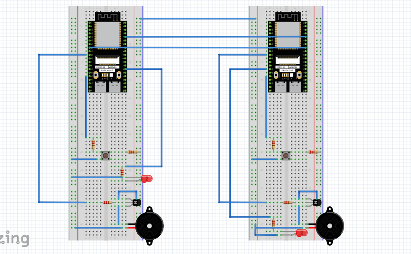
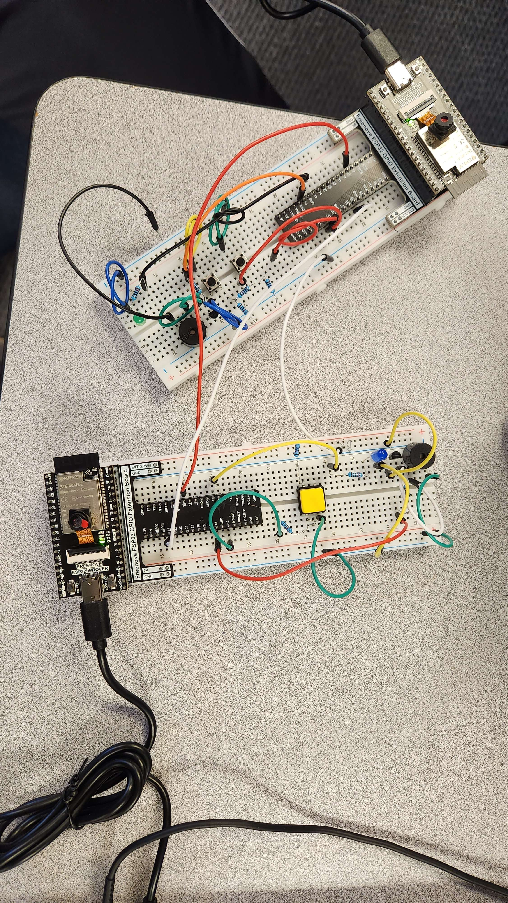

B0 = 31 # B
# Octave 1 ********************
C1 = 33 # C
CS1 = 35 # C#/Db
D1 = 37 # D
DS1 = 39 # D#/Eb
E1 = 41 # E
F1 = 44 # F
FS1 = 46 # F#/Gb
G1 = 49 # G
GS1 = 52 # G#/Ab
A1 = 55 # A
AS1 = 58 # A#/Bb
B1 = 62 # B
# Octave 2 ********************
C2 = 65 # C
CS2 = 69 # C#/Db
D2 = 73 # D
DS2 = 78 # D#/Eb
E2 = 82 # E
F2 = 87 # F
FS2 = 93 # F#/Gb
G2 = 98 # G
GS2 = 104 # G#/Ab
A2 = 110 # A
AS2 = 117 # A#/Bb
B2 = 123 # B
# Octave 3 ********************
C3 = 131 # C
CS3 = 139 # C#/Db
D3 = 147 # D
DS3 = 156 # D#/Eb
E3 = 165 # E
F3 = 175 # F
FS3 = 185 # F#/Gb
G3 = 196 # G
GS3 = 208 # G#/Ab
A3 = 220 # A
AS3 = 233 # A#/Bb
B3 = 247 # B
# Octave 4 ********************
C4 = 262 # C
CS4 = 277 # C#/Db
D4 = 294 # D
DS4 = 311 # D#/Eb
E4 = 330 # E
F4 = 349 # F
FS4 = 370 # F#/Gb
G4 = 392 # G
GS4 = 415 # G#/Ab
A4 = 440 # A
AS4 = 466 # A#/Bb
B4 = 494 # B
# Octave 5 ********************
C5 = 523 # C
CS5 = 554 # C#/Db
D5 = 587 # D
DS5 = 622 # D#/Eb
E5 = 659 # E
F5 = 698 # F
FS5 = 740 # F#/Gb
G5 = 784 # G
GS5 = 831 # G#/Ab
A5 = 880 # A
AS5 = 932 # A#/Bb
B5 = 988 # B
# Octave 6 ********************
C6 = 1047 # C
CS6 = 1109 # C#/Db
D6 = 1175 # D
DS6 = 1245 # D#/Eb
E6 = 1319 # E
F6 = 1397 # F
FS6 = 1480 # F#/Gb
G6 = 1568 # G
GS6 = 1661 # G#/Ab
A6 = 1760 # A
AS6 = 1865 # A#/Bb
B6 = 1976 # B
# Octave 7 ********************
C7 = 2093 # C
CS7 = 2217 # C#/Db
D7 = 2349 # D
DS7 = 2489 # D#/Eb
E7 = 2637 # E
F7 = 2794 # F
FS7 = 2960 # F#/Gb
G7 = 3136 # G
GS7 = 3322 # G#/Ab
A7 = 3520 # A
AS7 = 3729 # A#/Bb
B7 = 3951 # B
# Octave 8 ********************
C8 = 4186 # C
CS8 = 4435 # C#/Db
D8 = 4699 # D
DS8 = 4978 # D#/Eb
import time
from machine import Pin
import machine
import _thread
# Valid note frequencies (adjust these as needed)
# ... (Note frequency definitions)
# Global variables
led = Pin(13, Pin.OUT)
button1 = Pin(22, Pin.IN, Pin.PULL_UP)
button2 = Pin(23, Pin.IN, Pin.PULL_UP)
buzzer1 = Pin(14, Pin.OUT)
movement = "none"
reverse = True # Flag to control the reverseGPIO thread
def play(pin, melodies, delays, duty):
pwm = machine.PWM(pin)
for note in melodies:
pwm.freq(note)
print(note)
pwm.duty(duty)
time.sleep(delays)
pwm.duty(0)
pwm.deinit()
def reverseGPIO():
global reverse
while reverse:
if led.value():
led.off()
else:
led.on()
time.sleep(1) # Adjust blink interval as needed
def GPIO():
led.value(1)
mary= [
E4, D4, C4, D4, E4, E4, E4,
D4, D4, D4,
E4, G4, G4,
E4, D4, C4, D4, E4, E4, E4,
E4, D4, D4, E4, D4, C4
]
row = [
C4, C4, C4, D4, E4, E4, D4,
E4, F4, G4, G4, F4, E4, D4,
C4, C4, C4, D4, E4, E4, D4,
F4, E4, D4, C4
]
while True:
if movement == "none":
if not button2.value():
movement = "blink"
elif movement == "on":
GPIO()
play(buzzer1, row, 0.25, 512) # Adjust melody as needed
time.sleep_ms(2000)
if not button2.value():
movement = "blink"
elif movement == "blink":
_thread.start_new_thread(reverseGPIO, ())
play(buzzer1, mary, 0.25, 512) # Adjust melody as needed
reverse = False
time.sleep_ms(2000)
if not button1.value():
movement = "on"
-
Q1. Design and construct a circuit with a buzzer, an LED, and two push buttons (and other necessary
electronic components). The LED light blinks when one push button is pressed, and the song “Row,
Row, Row Your Boat” is played. The LED light stays on when the other button is pressed, and the
song “Mary Had a Little Lamb” is played.
-
Parts:
-
- - Active Buzzer: 1
- - Button: 2
- - Wires: 9
- - 1K Ohm resistors: 1
- - 10K Ohm resistors: 4
- - 220 Ohm resistors: 4
- - NPN Transistor: 2


-
Q2. This project needs two ESP32s. You need to work with a partner (classmate). Each ESP32 needs a
push button, LEDs, and a buzzer, (and other necessary electronic components). Design and construct a
circuit for each ESP32 so that the two ESP32s do serial communication using UARTs. When a
pushbutton is pressed from one ESP32 (A), the other ESP32 (B) responds by blinking LEDs and
playing some sound. When a pushbutton is pressed from the other ESP32 (B), ESP32 (A) responds by
blinking LEDs (a different pattern from the LEDS on ESP32 (B)) and playing some other sound.
-
Parts:
-
- - ESP32: 2
- - Wires: 22
- - 220 Ohm resistors: 2
- - 10K Ohm resistors: 4
- - 1K Ohm resistors: 2
- - Buttons: 2
- - LED: 2
- - NPN Transistor: 2
-

-

from machine import UART
from machine import Pin
import time
usart_flag=0
led = Pin(4, Pin.OUT)
button = Pin(13, Pin.IN,Pin.PULL_UP)
activeBuzzer=Pin(12,Pin.OUT)
activeBuzzer.value(0)
led.value(0)
myUsart = UART(1, baudrate=115200, bits=8, parity=0, rx=19, tx=34, timeout=10)
while True:
if not button.value():
myUsart.write(str("A"))
if myUsart.any():
#usart_buffer=myUsart.read()
usart_flag=1
if usart_flag==1:
usart_flag=0
x=0
while x LESS THAN 6:
led.value(not led.value())
x=(x+1)
time.sleep_ms(500)
activeBuzzer.value(1)
time.sleep_ms(1000)
activeBuzzer.value(0)
print("hello")
time.sleep_ms(100)